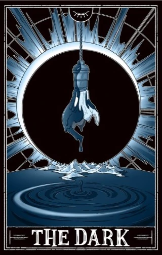
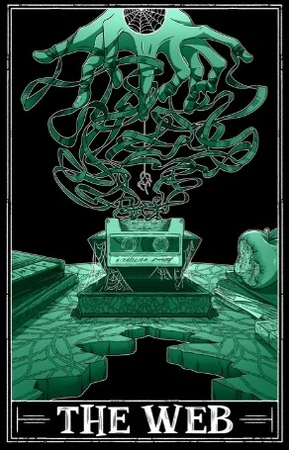

Due to its nature as a Horror Podcast, The Magnus Archives has to interact with one of our oldest emotions: Fear.
However, one of the most interesitng things about TMA is the manner in which fear is confronted, both by the characters and the authors.
In the Universe of The Magnus Archives, fear is much more then just an emotion. The Fears are incomprehensible eldritch beings, occupying the space next to reality. From here, they cling to our fears, absorbing them like leeches. Large amounts of the story are influenced by these fears, or the people who serve them in attempt to gain their blessing (known as "Avatars", which manifests as a special power to serve their new god.
The Eye
 The fear of being watched, followed, having secrets exposed.The Ceasless Watcher also thrives off of a drive to understand things, often to ones distruction. The Eye is often associated with eyes, a distant watching figure, or cameras. The Magnus Institute is a place of worship to The Eye, and was constructed to be such by its founder, Jonah Magnus.
The fear of being watched, followed, having secrets exposed.The Ceasless Watcher also thrives off of a drive to understand things, often to ones distruction. The Eye is often associated with eyes, a distant watching figure, or cameras. The Magnus Institute is a place of worship to The Eye, and was constructed to be such by its founder, Jonah Magnus.
The Buried
 The fear of suffocation, drowning, or being buried alive. This Fear loves those with intense Claustrophobia, and is most well known by one of its artifacts, an endless coffin.
The fear of suffocation, drowning, or being buried alive. This Fear loves those with intense Claustrophobia, and is most well known by one of its artifacts, an endless coffin.
The Dark

The Fear of the Dark. The most primal of human fears.
The Corruption
 Disease, rot, decay, insects,infection, the feeling of your skin crawling, The Flesh Hive is one of the most physically horrifying Fears. One of its avatars, Jane Prentiss, became nothing more than a walking hive, her skin covered in holes, with thousands of maggots crawling in and out of her.
Disease, rot, decay, insects,infection, the feeling of your skin crawling, The Flesh Hive is one of the most physically horrifying Fears. One of its avatars, Jane Prentiss, became nothing more than a walking hive, her skin covered in holes, with thousands of maggots crawling in and out of her.
The Desolation
 The Fear of loss, burning and sensless destruction. The Lightless Flame leaves those who come across it and its followers empty, hollow and broken.
The Fear of loss, burning and sensless destruction. The Lightless Flame leaves those who come across it and its followers empty, hollow and broken.
The Flesh
 Primarily an animalistic fear, The Viscera is the fear of being bred for the slaughter. Many people have also been affected by this entity however, as they realise that we too are nothing more than flesh and bones.
Primarily an animalistic fear, The Viscera is the fear of being bred for the slaughter. Many people have also been affected by this entity however, as they realise that we too are nothing more than flesh and bones.
The Hunt
 The Fear of being chased or followed, of being prey. The Endless Hunt takes hold of those who experience it, as they become overtaken by the need to hunt.
The Fear of being chased or followed, of being prey. The Endless Hunt takes hold of those who experience it, as they become overtaken by the need to hunt.
The Lonely
 The fear of cosmic isolation, or being dissconected from the rest of society. The Foresaken often manifests as fog, empty rooms and faceless crowds.
The fear of cosmic isolation, or being dissconected from the rest of society. The Foresaken often manifests as fog, empty rooms and faceless crowds.
The Slaughter
 The fear of sudden violence,war, or randomly being inflicted pain for no reason.
The fear of sudden violence,war, or randomly being inflicted pain for no reason.
The Spiral
 The Spiral is the fear of insanity. It is the fear of impossible geometry, the fear that your mind is lying, the fear that your very own senses aim to trick or decieve you. The spiral often manifests as doors and spiral imagery, such as fractals.
The Spiral is the fear of insanity. It is the fear of impossible geometry, the fear that your mind is lying, the fear that your very own senses aim to trick or decieve you. The spiral often manifests as doors and spiral imagery, such as fractals.
The Stranger
 The Stranger is the fear of the unfamiliar, the uncanny, that something is wrong. The faceless man at the end of the street, the disturbingly lifelike appearance of manequins and taxidermy, or the feeling that someone you know is not who they appear to be. Not anymore.
The Stranger is the fear of the unfamiliar, the uncanny, that something is wrong. The faceless man at the end of the street, the disturbingly lifelike appearance of manequins and taxidermy, or the feeling that someone you know is not who they appear to be. Not anymore.
The Vast
 Heights, falling, sudden vertigo. The Vast often manifests as impossibly infinite bodys of air or water. It is the feeling of humanities insignificance.
Heights, falling, sudden vertigo. The Vast often manifests as impossibly infinite bodys of air or water. It is the feeling of humanities insignificance.
The Web

The Mother of Puppets, The Spider, The Hidden Machination, the Web is known by many names. It governs the fear of being manipulated, especially by things beyond your understanding. This fear is also stronlgly connected to spiders, webs and puppets.
The End
 The fear of the inevitable. All things must end one day.
The fear of the inevitable. All things must end one day.
The Extinction
 A peculiar fear, as its very exsistance is constantly being questioned, both inside the show and out. It is the fear of catastrophic change, of eradication. It covers the destruction of nature, humans and humanity.
A peculiar fear, as its very exsistance is constantly being questioned, both inside the show and out. It is the fear of catastrophic change, of eradication. It covers the destruction of nature, humans and humanity.
❮
❯
Which of these Fears do you find most interesting/disturbing? Personally, I find The Spiral to be both very complex and horrifying. Leave a message below explaining which one you like and why!